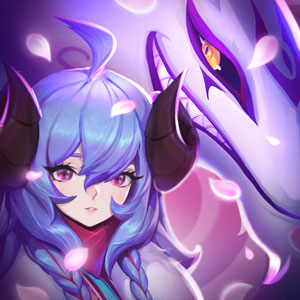

킨드레드는 따로지만 언제나 함께인 죽음의 양면을 지닌 존재다.
운명을 받아들인 자에게는 양의 화살로 빠른 죽음을 선사하고, 운명을 거부하고 도망치는 자에게는 늑대가 달려드는 잔혹한 최후를 안겨준다.
룬테라에서는 지역마다 킨드레드의 본성에 다른 의미를 부여했지만, 필멸의 존재라면 결국 진정한 죽음을 선택해야만 한다는 점은 같았다.
킨드레드는 공허를 하얀빛으로 포용하는 존재이자 어둠 속에서 번뜩이는 이를 악문 존재이기도 했다.
목동이자 도살자, 시인이자 야수. 킨드레드는 하나이면서 둘이었다.
삶의 마지막에 이른 누군가의 목에서 맥박 소리가 뿔피리보다 더 요란하게 울릴 때 그들의 사냥은 시작된다.
양의 은빛 활시위가 당겨지는 것을 보며 고요히 죽음을 맞이한다면 한 치의 오차도 없는 화살이 단번에 목숨을 앗아갈 테지만, 양의 화살을 거부한다면 늑대에게 추격당해 비참하게 삶을 마감해야 한다.
사람들이 죽음이라는 것을 알게 된 이래로, 킨드레드는 발로란 어디에나 존재했다.
데마시아에서는 마지막 순간에 운명의 뜻에 따라 양의 화살을 받아들이지만 녹서스의 어두운 뒷골목에서는 늑대가 도망자를 쫓는 일이 더 많았다.
매서운 눈보라가 몰아치는 프렐요드 산기슭의 어느 전사들은 전투에 임하기 전 늑대에게 입을 맞췄다.
늑대가 적을 추격해 물어뜯어 주기를 기원하는 의식이었다.
빌지워터에서는 매년 해로윙 다음날 모두가 모여 살아남은 것을 자축하고 양과 늑대에게 진정한 죽음을 선사받은 자들을 기렸다.
킨드레드를 거부하는 것은 곧 자연의 섭리를 거부하는 것이다.
킨드레드를 피해 갈 수 있었던 몇 안 되는 이들에게는 남은 생을 악몽 속에서 보내는 가혹한 운명이 뒤따랐다.
그림자 군도에서 언데드의 육신에 갇힌 자들을 킨드레드는 무던히 기다리고 있다.
양의 화살로든 늑대의 송곳니로든, 결국 누구나 죽음을 피할 수 없다는 걸 잘 알기 때문이다.
영겁의 사냥꾼 킨드레드의 존재를 형상화한 최초의 물건은 한 쌍의 고대 가면이다.
이름 모를 이들이 조각한 그 가면이 걸려 있던 묘지의 주인은 잊힌 지 오래이나, 양과 늑대는 오늘날까지 그래왔듯 앞으로도 영원히 함께 킨드레드로 남을 것이다.